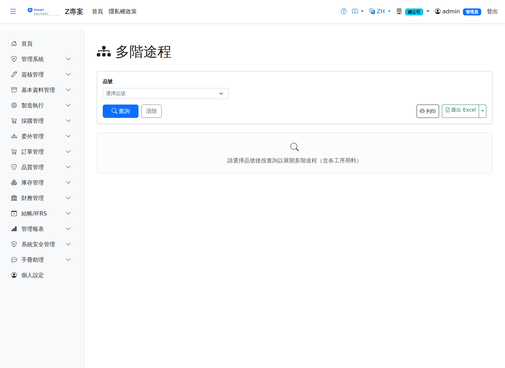

多階途程Multi-Level Routing
選擇一個品號，逐階列出各「自製件」的途程工序（工作中心、整備時間、單位工時、時間單位、良率、 委外）與每道工序的用料清單（料表）。最上階為 Level 0，工序用料中的自製件會在下一階出現自己的途程區塊， 並顯示該階的累計需求量（以最上階成品 1 單位為基準）。Choose an item and list, level by level, the routing operations of every made item (work center, setup time, unit time, time unit, yield, outsourced) together with the material each operation uses. The top level is Level 0; a made item among the operation material gets its own routing block at the next level, showing the cumulative demand at that level (for one unit of the top-level finished item).

查詢Search
列印與匯出Printing and export
說明Guide
途程有效性判斷與「多階料表」一致（啟用＋生效區間含查詢當日）。工作中心欄顯示「代號 — 名稱」； 委外工序以標章標示。A routing counts as valid on the same basis as in "Multi-Level BOM" (active, and the query date within its effective period). The work center column shows "code — name"; outsourced operations are marked with a badge.
欄位說明Field reference
查詢條件Query criteria
| 條件Condition | 說明Guide |
|---|---|
| 品號Item | 必填Required 要展開的成品；一次展開一個品號Finished item to explode; one item at a time |
工序欄位Operation fields
| 欄位Field | 說明Guide |
|---|---|
| 工序Operation | 途程中的工序序號，決定執行順序Sequence of the operation in the routing, which sets the order it runs in |
| 工序名稱Operation | 該工序的作業名稱Name of the operation |
| 工作中心Work Center | 執行該工序的工作中心Work center that performs the operation |
| 整備時間Setup Time | 換模、換線等生產前準備時間，每張派工單只計一次Preparation time before production such as changing tooling or lines, counted once per dispatch |
| 單位工時Unit Time | 生產一個良品所需的標準工時Standard time needed to produce one good piece |
| 良率%Yield % | 該工序投入→良品的產出良率，預設 100Yield from input to good output at this operation, 100 by default |
| 委外Outsource | 標示該工序是否委由外部廠商加工Marks whether the operation is subcontracted to an outside supplier |
工序用料欄位Operation material fields
| 欄位Field | 說明Guide |
|---|---|
| 序Seq | 用料行序Material line seq |
| 品號 / 品名Product | 該工序要領用的料件Item to be issued for the operation |
| 單位 / 單位用量Unit / Usage per unit | 用料的計量單位與每單位產出的用量Unit of measure of the material and the usage per unit of output |
| 損耗率% / 下角率%Scrap rate% / Offcut rate% | 需求量的外加成比例Uplift added on top of the demand |
| 來源Source | 自製件會在下一階出現自己的途程區塊；採購件為葉節點A made item gets its own routing block at the next level; a purchased item is a leaf node |